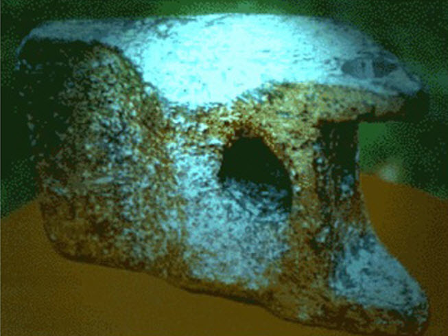
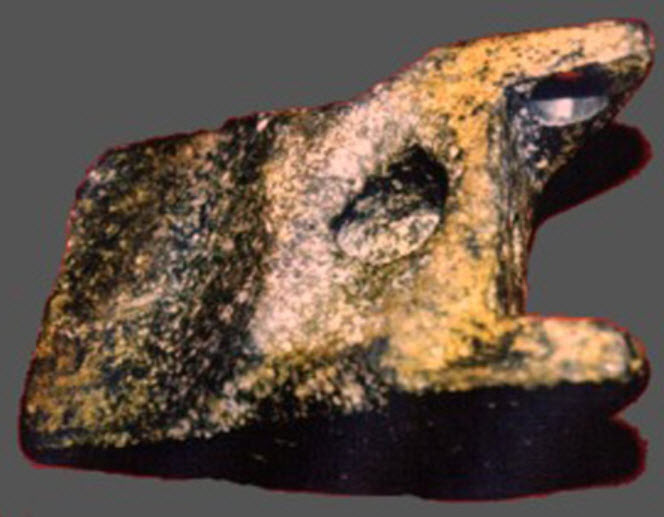
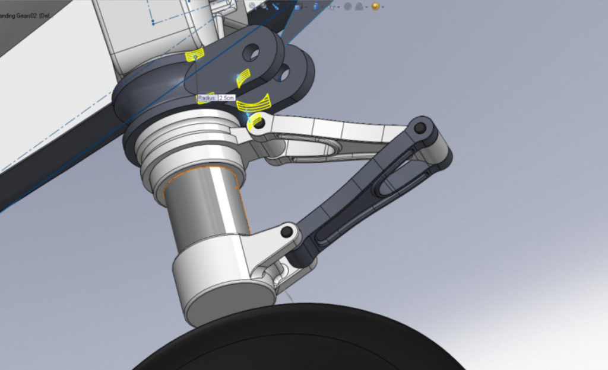
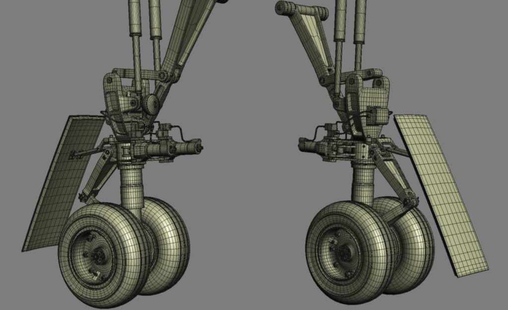
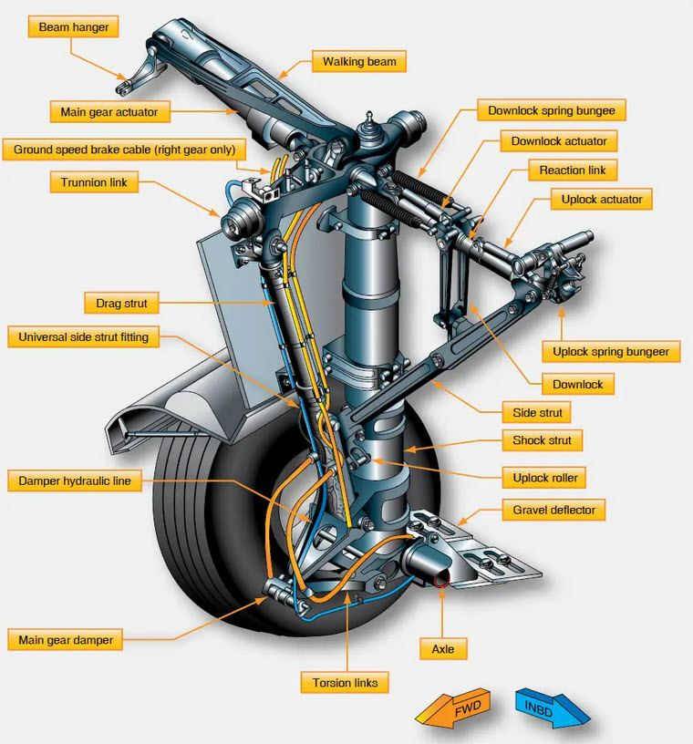
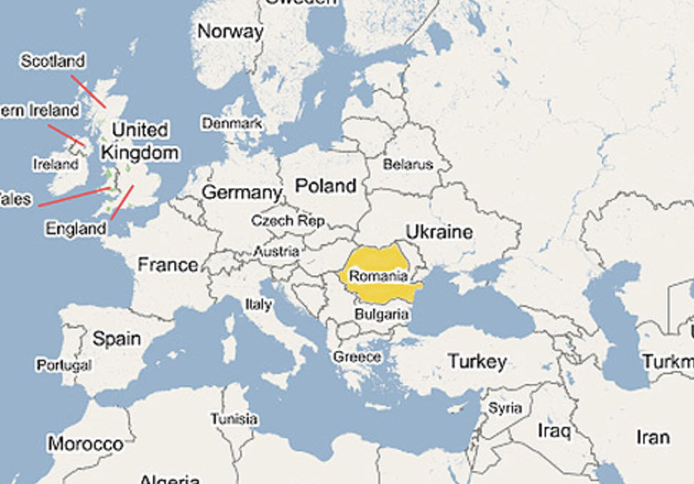
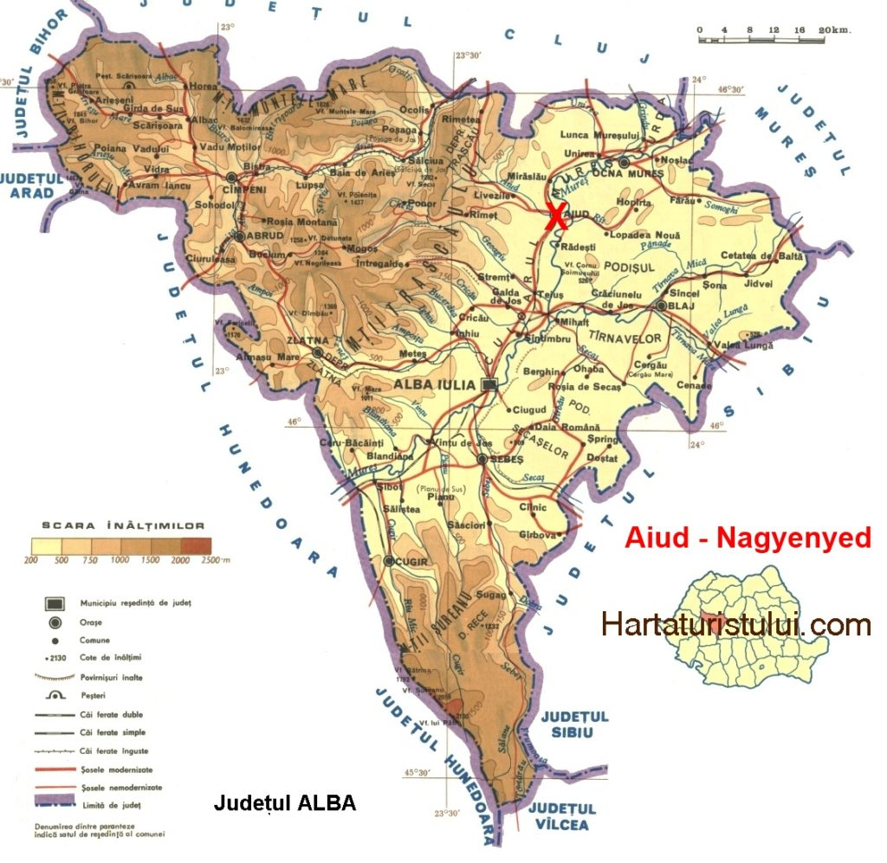
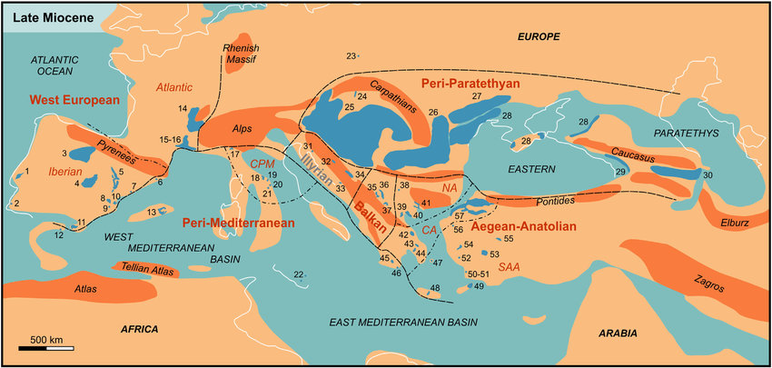
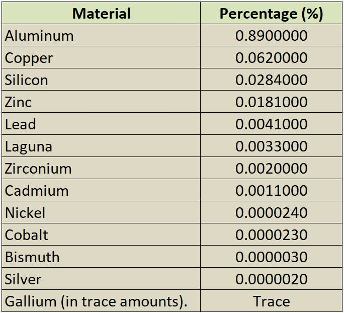

Today I woke up at the crack of dawn, made my self a nice stout coffee (after I washed my face) and ate it with some buttered baguettes. It’s a nice little routine that I have, especially since I found a bakery that makes these kinds of bread instead of the soft and sweet “sponge cakes” (style breads) that are irritatingly common throughout China these days.
Sweet breads are not my favorite, though. Bagels are. And finding a proper bagel in China is an exercise in futility.
My old dog was snoring and barking in his deep doggie dreams. His little doggie paws were making padding moves and he was softly barking between his snoring.
It was a nice lovely and calm morning.
I sat down, fired up my computers, sat down (after I measured my blood pressure) and checked my email, as the dawn was lightening up. I could feel the fresh ocean breeze carry the fragrances of the local flowers, and the birds were singing their morning songs. It was calm and pleasant.
Uncle MM has left me some bars of gold…
What do you know!
My long lost great uncle Metallicman has died without any heirs. And I am the closest relative. Who would have figured?
What are the odds?
What’s more, he’s got a couple of billion dollars in the bank and I was contacted to see if I was his long, lost relative.
My goodness. Imagine that!
My name is Fabian Artoro, an asset management brokerage consultant. I am contacting you on behalf of my late client who worked as an independent engineering contractor in a gold mining company in my country, the Republic of Ghana. He was my client until his sudden demise on the 24th of April 2018, fatal car crash, his wife and their only daughter were all involved in that car crash along Kumassi express Road. Sadly, all occupants of the vehicle, unfortunately, lost their lives. My client had funds, a huge amount in one of the financial institutions here and it is in the process of being confiscated by the state as unclaimed funds...
I’m sure it is legitimate.
Don’t you?
Well, After checking my normal (tap, click and move on) websites, and finding out that they are all parroting the same-old, same-old nonsense, I moved on. You do get tired of the same spiel day in, and day out.
What am I talking about?
Well, I am talking about this…
First up, your daily dose of Anti-China…
It’s been a daily top-line item in my feeds since 2016.
- Thiel Calls Bitcoin ‘Chinese Financial Weapon’…
- Criticizes GOOGLEAPPLE for being too close to Communists…
- China’s bitcoin mining is threatening its climate change …
- Scientists slam WHO-China report, demand ‘full …
- China Says Carrier Group Exercising Near Taiwan, Drills …
- China says U.S. to blame for tensions over Taiwan
- China Says UK Sheltering ‘Wanted Criminals’ After HK …
- China says H&M changed online map after criticism – ABC …
- Myanmar coup: China’s non-interference could hurt China …
- American ‘woke’ companies blamed for fueling China’s rise …
- In China COVID origin debate, Beijing attacks India for …
Then, some stuff about guns…
Ai! You’ve just got to have something about guns. This is an American website, don’t you know.
- Biden to unveil actions on guns, including new ATF boss… Developing…
- Biden announces gun control actions – The Washington Post
- Biden falsely claims gun manufacturers ‘can’t be sued …
- Biden targets ‘ghost guns’ and ‘red flag’ laws in new gun …
- Biden says gun violence is an epidemic, calls for red-flag law
Then you have your Washington DC political bullshit…
As if the entire nation (and world) actually cares…
- Manchin won’t vote to end filibuster; Blow to Joe…
- Arkansas’s conservative gov quietly bucking GOP’s dive into culture wars…
- Former Rep. Katie Hill loses first round in suit alleging revenge porn…
- NYC RICH FACE 52% TAX RATE
Then some stuff on the Coronavirus…
Of course.
- Now Fauci says another surge IS ON THE WAY?
- Cases steady at 65,000 per day…
- Rise of variants define next phase…
- Severe symptoms in young…
Then some words from “experts”…
Those “experts” are everywhere. Don’t you know know. They are thicker than flies. I’ll tell you what.
- Chauvin used body weight to pin Floyd’s neck and never moved, expert says…
- COVID-19 vaccines may reduce transmission, experts say …
- What experts say about Monday’s swarm of earthquakes in L …
- Experts Say the ‘New Normal’ in 2025 Will Be Far More Tech …
- Chauvin trial: Forensics experts say pills found in squad …
- COVID-19 ‘long haulers’ need dedicated clinics, experts say
- New Vaccines No ‘Guarantee of Victory’ Over COVID, Experts Say
- Are mRNA Covid Vaccines Risky? What the Experts Say …
Some stuff that might be of interest to the folk in the “red states”…
You know, to keep the folk interested.
- America’s Population Growth Slowest Since 1918…
- MAG: America’s bipolar summer…
- Florida sues to allow cruises to resume…
- Health officials split on rapid tests as admission tickets…
- Independence Day Parade on National Mall Canceled…
Prepping for yet more war!
- Putin puts 100,000 troops on Ukraine border…
- Russia Warns of Full-Scale War…
- US warships to deploy in Black Sea…
- China Issues New Threats to Taiwan: ‘Island’s Military Won’t Stand a Chance’…
But, you know, America is doing just great!
Some “bread and circuses for the masses…
With a dash of sex and religion…
- Religious leader accused of sex assault during exorcism…
- The Real Christian Preacher Sex Scandal Is How Many There …
- Christian sex before marriage: I am a horny woman, and I’m …
- Christians Promote Holy, Hot Sex in Marriage – ABC News
- Christian teachings on sex – Sexual relationships – GCSE …
And watch out! Aliens are going to enslave humans!
My goodness!
- Contacting alien life forms in universe could invite them to ‘rule Earth’…
- Aliens definitely exist and they could be living among us …
- Leading scientist predicts we will contact aliens — but it …
- Aliens would be ‘friendly but we can’t gamble on it’ in …
- Aliens could be sucking energy from black holes. That may …
- Physicist says alien life will be found within the century …
- Former Astronaut Suggests Alien Beings Are Here On Earth …
Reminds me of the movie “Battleship”. Nice CGI, by the way. And yeah, this was the entire plot and story line behind it. Don’t you know…
Well that was about as useful as giving a dolphin a pair of crutches.
So then it’s off to MM, and I check the comments. Ohhh baby!
MM Comment Section
Right there at the top of my comment “awaiting approval” list is this piece of insulting passive-aggressive bullshit.
I see you’re still doing the bidding of your new country comrade, it’s dishonest to hide the fact that you are a round-eyed Chinese operative…apparently there is no such thing as a retired intelligence officer.
I am too old for this nonsense.
- I’ve lived in China for nearly two decades and no one has ever used the term “comrade“. I guess this jackass never got the memo. He’s probably still talking about how groovy the Mod Squad is, and fondling his “love beads”.
- I’m dishonest? Even in prison they told me that I “couldn’t lie worth shit“. I can’t. So I just don’t try. I tell you it straight. You either take it or not. It really makes my life simpler. What you see is what you get.
- “Round eyes” sounds pretty fucking racist to me.
Idiots abound in this world.
Sometimes I wonder if they really believe what they say, or that they want to live inside a rotten world-line template. This “fellow” is certainly making his MWI topographical map “interesting“.
Here’s a MM secret; if you want to have a nice calm and happy life, make others happy. If you want to have a problem-some, and tumultuous life, then spend your time making others miserable.
Anyways, it’s 7am and I could use a beer.
Do you “feel” me?
The rest of the world is not my problem. You all will see what the fuck is going on in your little neck of the woods soon enough. Especially this piece of shit (will).
Anyways…
I am sorry that I have been so busy with all these other issues lately. But I do “feel” a need to start post more MAJestic related stuff, and that means OOPART stuff as well.
Which leads me to this mystery…
The Aiud Mystery in Transylvania
Yeah. Aiud is in the Transylvania region of Romania. It in the state of Alba. It’s that triangle shaped region in the map below.
Of all the hundreds of websites about this mystery object, not one single one bothered to look up Aiud on a map. They just cut and paste from other websites.
Slothful. Lazy.
Money-grubbing. Greedy.
“For-profit” oriented assholes.
Doesn’t anyone ever just do things because they WANT to do it? Jeeze!
Anyways, in 1974, in Romania, East of Aiud, (in Transylvania) a group of workers, on the banks of the river Mures, discovered three buried objects in a sand trench 10 meters deep.
In sand, near a river, implies that the river eventually covered these items and buried them in silt. Then later, when the river became smaller or changed it’s path, the silt remained as sandy soil.
Of the three items, two of the objects proved to be Mastodon bones. These dating from between the Miocene and the Pleistocene periods. The third object — the Aluminum Wedge of Aiud, also known as the Object of Aiud, is a mysterious wedge-shaped block of aluminum metal.
The mysterious aluminum object was discovered by chance in 1974 at a depth of 10 meters at a quarry by the banks of river Mures near the Romanian town of Aiud. The artifact weighs approximately 2 kilos (length: 21cm; width: 12.5 cm; thickness: 7cm). According to researchers and engineers it appears very similar to the feet fused on modern landing gear found on aircraft with vertical landing and take-off. For conventional investigators it appears as a hammer head. In its vicinity researchers found two mastodon bones(extinct large tusked mammal species that lived between 10,000 and 80,000 BC). Based on the findings next to the object it can be assumed that the object is at least 10,000 years old. -HistoryDisclosure
Because it is out of place, it is considered an OOPART.
After all, contemporaneous belief is that Mastodons were unable to fabricate tools, let alone precision manufacture of aircraft components. They didn’t have opposing thumbs, don’t you know. Let alone the fact that those enormous tusks of theirs would get in the way of precision manufacturing…
That goes as well for the local humans at the time. They are considered to be primitive.
So what the heck is a pawl from a landing gear doing with some mastodon bones near a river in Romania?
Dating the object
According to conventional history the artifact should not exist since aluminum was discovered in 1807 and wasn’t produced in any usable form until after 1886.
A subsequent dating analysis (I haven’t been able to find details on the dating technique used) on the artifact indicated that it was at least 200,000 years old.
This date apparently came from the geological evidence where the bones and pawl were found. When the “front end loader” excavated the trench (or what ever equivalent did so in the 1970’s in Romania) the soil, and the mastodon bones indicated a very approximate date sometime within the Pleistocene.
Mastodon, (genus Mammut), any of several extinct elephantine mammals (family Mammutidae, genus Mammut) that first appeared in the early Miocene (23 million to 2.6 million years ago) and continued in various forms through the Pleistocene Epoch (from 2.6 million to 11,700 years ago). -Mastodon | Description, Distribution, Extinction, & Facts ...
Obviously they weren't using it on one of their aircraft, or it just suddenly "fell off" some aircraft speeding along two million years ago, eh?
However, a conjecture…
If we go ahead with the idea that perhaps a primitive human or pre-human picked up this aluminum pawl in it’s travels…
…and thinking that it is a nice “stone”, being light and easy to carry (5 pounds), with a nice pointed end…
…that shows abrasions on the pointed ends and sides…
…which makes this scenario likely…
…then we can date this part as used as a tool by the pre-humanoids in that region at that time.
The oldest handmade stone tools discovered yet predate any known humans and may have been wielded by an as-yet-unknown species, researchers say. The 3.3-million-year-old stone artifacts are the first direct evidence that early human ancestors may have possessed the mental abilities needed to figure out how to make razor-sharp stone tools. The discovery also rewrites the book on the kind of environmental and evolutionary pressures that drove the emergence of toolmaking. Chimpanzees and monkeys are known to use stones as tools, picking up rocks to hammer open nuts and solve other problems. However, until now, only members of the human lineage — the genus Homo, which includes the modern human species Homo sapiens and extinct humans such as Homo erectus — were thought capable of making stone tools. [See Photos of the Oldest Stone Tools] Ancient stone artifacts from East Africa were first uncovered at Olduvai Gorge in Tanzania in the mid-20th century. Those stone tools were later associated with fossils of the ancient human species Homo habilis, discovered in the 1960s. -LiveScience
So…
This aluminum pawl could be 2.3 million years old.
Humans during the Pleistocene
Let’s have Caleb Strom explain what “humans” were like during this time. (From here.)
The evolution of anatomically modern humans took place during the Pleistocene. In the beginning of the Pleistocene Paranthropus species were still present, as well as early human ancestors, but during the lower Palaeolithic they disappeared, and the only hominin species found in fossilic records is Homo erectus for much of the Pleistocene. -Pleistocene - Wikipedia
The Pleistocene epoch is a geologic epoch which began around 2.6 Mya (Million years ago) and came to an end around 11,700 BP (Before Present). It is characterized by lower sea levels than the present epoch and colder temperatures. During much of the Pleistocene, Europe, North America, and Siberia were covered by extensive ice sheets and glaciers. The Pleistocene was an important time because it was when the human genus first evolved.
The Pleistocene ( PLYSE-tə-seen, -toh-, often colloquially referred to as the Ice Age) is the geological epoch that lasted from about 2,580,000 to 11,700 years ago, spanning the world's most recent period of repeated glaciations. The end of the Pleistocene corresponds with the end of the last glacial period and also with the end of the Paleolithic age used in archaeology. The name is a combination of Ancient Greek πλεῖστος (pleīstos, "most") and καινός (kainós (latinized as cænus), "new". -Wikipedia
The flora and fauna today also more or less reached their current form during the Pleistocene. Most Pleistocene animals and Pleistocene plants also exist in the Holocene. Furthermore, the Pleistocene epoch was the last geological epoch in which humans had relatively little impact.
While parts of the world were dryer – such as central Europe, which was mostly covered in tundra, other parts of the world were wetter and greener.
Many of the animals common today were also common in the Pleistocene. Deer, big cats, apes, elephants, and bears could all be found in a Pleistocene landscape. There were also animals that were common which have since gone extinct, such as mammoths, mastodons, saber-toothed cats, giant ground sloths , and pre-human hominins .
Europe and Asia had significant populations of African fauna. Cave paintings and paleontological finds in Europe reveal that rhinoceroses, lions, and hyenas were all common at that time in southern Europe. The island of Sicily was also inhabited by a dwarf elephant species until surprisingly recent times. Northern Europe was covered in glaciers and inhospitable, while central Europe was tundra. Southern Europe, however, contained forests and was inhabited by numerous species of megafauna, most of which have since died out.
Another important development on the Pleistocene timeline was the emergence of the human genus: Homo. Humans probably evolved out of bipedal apes, such as the Australopithecines and Ardipithecus Ramidus . These early bipedal apes are classified as hominins. Hominins first evolved near the end of the Miocene epoch (25-5 Mya) in south and east Africa. Other than their upright posture and bipedalism, these hominins were not significantly more human than previous apes.
Their skeletons indicate that they resembled modern apes such as chimpanzees and their use of tools was limited or absent. At the beginning of the Pleistocene, however, a new type of hominin appeared. These hominins were taller, more dependent on upright locomotion, and had larger brains, which allowed them to excel in tool use over any previous hominin. These hominins belong to the genus Homo and hominins in this genus are simply called humans.
The earliest human species was Homo Habilis . The first examples of this species appeared about 2.3 million years ago. They used simple flake tools which were made by taking rocks and striking sharp flakes off other rocks – which could be used as cutting tools. Homo Habilis was more technologically inclined than its hominin predecessors, but it was still closer to earlier and more ape-like hominins than modern humans.
The next earliest human species is Homo Erectus . The first H. Erectus evolved around 2 million years ago and the last of them did not die out until sometime within the last 100,000 years. Archaeological and paleontological evidence suggest that they may have been the first humans to use culture as a wholesale approach to adapt to their environment. They were more advanced tool users and were also much taller than previous hominins, about six feet (1.83 meters) tall. They were also the first humans to leave Africa. By 1 million years ago, H. Erectus had spread to both Europe and Asia, bringing humans for the first time to these regions.
The earliest humans were universally hunter-gatherers. Their use of technology to interact with their environment made them very adaptative – so that humans eventually found their way into every possible environment on the planet: forests, grasslands, deserts, even tundra.
For most of the Pleistocene, humans did not significantly impact their environment. There were no more than a few hundred thousand individuals at a given time and their ability to transform the landscape was limited by primitive technology and limited social organization.
This all changed with the emergence of Homo Sapiens (modern humans) in Africa and Homo Neandertalensis (Neanderthals) in Europe.
Anatomically modern humans first evolved in Africa around 200,000-300,000 BP. After the emergence of anatomically modern humans, something happened, perhaps a rewiring of the human brain , that led to the emergence of modern behaviors like art, blade production, long distance trade, and more efficient, organized hunting, among other abilities.
This change in behavior caused humans to have a significantly larger influence on their environment than in previous times. This can be seen in the fate of most megafauna, especially in the New World. Megafauna extinctions occurred around 40,000-50,000 years ago in Australia and around 13,000 years ago in North America. Both occurred shortly after the appearance of humans on these continents.
Obviously, Homo Neandertalensis (Neanderthals) are unlikely to have mined ore, smelted it, studied how to create alloys, formed it into aircraft components, and machines it for use in aircraft.
Thus we have an OOPART worthy of investigation.
An investigation ensues
So of course, if you are part of a construction crew and you dig up some bones, and other odd objects you call the authorities. And if the bones or objects look old, you call in the experts from the local museum, college or university to have a look.
Thus the object was sent to the archeological institute of Cluj-Napoca.
After the investigation and study, the block was donated to the History Museum of Transylvania, to be rediscovered and analyzed many years later. (I cover that later on.) Its weight turned out to be 5 pounds, and its approximate measurements are 20 x 12.5 x 7 centimeters.
There are two holes of different sizes.
The object has two arms like features.
Traces of abrasion can be seen on the sides of the object and at its lowest point.

Dr. Niederkorn of the institute for the study of metals and non-metallic minerals located in Magurele, Romania, concluded that the object is comprised of a alloy of an extremely complex metal.
He was not exaggerating.
Twelve different elements combine to form the Aiud Object. It consists of: 89% aluminum, 6.2% copper, 2.84% silicon, 1.81% zinc, 0.41% lead, 0.33% tin, 0.2% zirconium, 0.11% cadmium, 0.0024% nickel, 0.0023% cobalt, 0.0003% bismuth, and trace of galium.
Furthermore, this strange object is covered with a thick layer of aluminum oxide, which lends credence to its antiquity.
"After the analysis of this aluminum oxide layer, "specialists" have confirmed that the object is a minimum of 300 to 400 years old."
But that’s a bullshit guess.
The generation of aluminum oxide depends on the environment and the particular alloy that is being used. Unless you have that exact alloy of aluminum and put it though accelerated life testing, in the environment in question, it is IMPOSSIBLE to determine the age of anything.
Accelerated life testing
Accelerated life testing? What is that?
Well, it’s a common enough and fundamental aspect of engineering product design, but unknown to most other people. it is a way of estimating the life of a product due to environmental concerns. It’s a pretty handy and mature method for determine the life of a given object, or going backwards, the age of an object.
So here’s some basic links for the interested explorer…
- 3.1.4. Accelerated life tests – NIST
- Accelerated Life Testing – What is Six Sigma
- Accelerated Life Testing – Reliability & Test Equipment
- Videos of Accelerated Life Testing
- Accelerated Life Testing | JMP
- Introduction to Accelerated Testing Types – ReliaSoft
- Accelerated Life Testing and Data Analysis
But what we really want to determine is the accelerated life test due to corrosion. In that case similar, but more specialized tests must be conducted…
An accelerated corrosion test is a cyclic climate test for determination of the corrosion resistance of various types of coatings. In an accelerated corrosion test, corrosion, corrosion test, corrosion, degradation or failure of materials and products are induced without change in corrosion mechanism (s) in a shorter time period than under normal conditions. -What is an Accelerated Corrosion Test (ACT)? - Definition ... www.corrosionpedia.com/definition/1503/accelerated-corrosion-test-act
And some links…
- What is an Accelerated Corrosion Test (ACT)?
- Accelerated corrosion testing
- ACCELERATED CORROSION TEST
- Accelerated Corrosion testing | TÜV SÜD PSB
- Evaluation of Accelerated Corrosion Test Procedures
- What is the standard method for accelerated corrosion test
Oxidation of Aluminum
Different alloys of aluminum oxidase differently. Some alloys are great for marine environments, while others are not that great, but have better strength characteristics. Further complicating the issue is the environment. Exposure to a dry environment is quite different from sitting with in a bog or sandy soil.
The ONLY way that you can accurately test for the oxidation characteristics of a new alloy is to perform extended life testing on a sample of the aluminum alloy within a simulated environment. Otherwise your estimates on aging through oxidation are all wrong.
Oxidation of Aluminum and it’s alloys.
It’s all pretty simple really.
The Aluminum Pawl

Many people have things to say about this object and opinions on dating it.
No one is saying that the aluminum pawl is recent. Aside from making them look silly in the eyes of their contemporaries, it’s obvious that this chunk of metal is old. Really old. The level of corrosion on the object far exceeds any kind of contemporaneous aluminum corrosion. It’s just simply very extraordinary and unusual.
And because of this there are numerous statements being made…
The fact that this strange metal object was found alongside Mastadon bones does cause one to wonder and raises many issues. And... Other specialists claim that the object could be 20,000 years old because it was found in a layer with mastodon bone. Perhaps this particular specimen lived in the latter part of the Pleistocene. And... Some researchers suppose that this piece of metal was part of a flying object that had fallen into the river. They presume that it had an extraterrestrial origin. Other researchers believe the wedge was made here on Earth and its purpose has not yet been identified.
Ah…
Some have speculated that this object is part of an Aircraft
It looks like a badly corroded locking latch from the retraction mechanism of an aircraft’s undercarriage, but that can’t be….surely?
Can it?

These mechanisms come in all sorts of sizes and shapes. But the closest thing to explain the operational features and functions of this aluminum pawl is the aircraft retraction mechanisms in contemporary aircraft.
I mean it’s more likely that this item was the part of some kind of landing gear mechanism than say a “frying pan”, a “pick axe”, a “railway train wheel”, a metal frame for a window”, a “water pipe” or an “anvil”.
Which makes one wonder what is one doing 2.5 million years ago, being used to break up the bones of a mastodon.
Could it have ended up down amongst bones that were deposited thousands of years ago by chance? It just happened to fall off an aircraft, that just happened to be flying a few million years ago, and it just happened to fall into the remains of a dead mastodon.
I guess it could.
Anything is possible.
And while it is possible, it is not probable.
The simplest explanation is probably the closest to the truth.
Whilst it is likely that the philosophy was posthumously attributed to him, as it was based upon common medieval philosophy, it seems to be a result of his minimalist lifestyle. Occam's razor is more commonly described as 'the simplest answer is most often correct,' although this is an oversimplification. The 'correct' interpretation is that entities should not be multiplied needlessly. Researchers should avoid 'stacking' information to prove a theory if a simpler explanation fits the observations. Occam's razor is the process of paring down information to make finding the truth easier. In science, it is getting rid of all the assumptions that make no difference to the predictions of the hypothesis. If you have a few hypotheses that could explain an observation, it is usually best to start with the simplest one. -How Occam's Razor Works | HowStuffWorks
Or in other words, look for the simplest explanation, and then go from there. You add and include or discount and discard theories that fit or don’t fit the investigation that you are performing.

Names on a landing gear
I call it a pawl. But who knows what it’s actual role was.
pawl. (pôl) n. A hinged or pivoted device adapted to fit into a notch of a ratchet wheel to impart forward motion or prevent backward motion. [Perhaps variant of pale or pole, or from French pal (from Old French; see pale1 ).] -Pawl - definition of pawl by The Free Dictionary
It’s actual use name would be better described differently.

Perhaps instead of a pawl, I could refer to it as a “drag strut to trunnion link walking beam“. Do you think that it would make things clearer?
Aiud in Romania
Ok, well let’s review where it was found. maybe some of you might want to hop on a plane and investigate for yourselves. You know, like Anonymous Jane did regarding the fuselage in The Fuselage embedded within the rocks of Victoria Falls.
If you do, I would be more than happy to post some of your pictures and info here. This is, after all, a collaborative effort.
Location of Romania. (This is for you Americans out there. The rest of the world pretty much knows where Romania is on a map.)

As far as where the town is, you need to look on a map. Here is a Romanian political map showing the location of Aiud. It is in the Alba (or Alba Lulia) state, which looks like a triangle.
And within this state we can find the location of Aiud in Romania.

Romania in the Miocene and the Pleistocene
Of course, a few thousand to a few million years ago Romania didn’t look like it does today. There was a lot of water there. With the Carpathian mountains creating a line of islands that interrupted a much larger Black Sea. If the dating was a million years ago, then we can say that the proto-humans who found and used this pawl were not all that far from the shorelines or feeding rivers to the Black Sea.

Palinspastic map for the Late Miocene with indication of palaeobiogeographic units (modified after Popov et al., 2004). Pannonian area emended after Magyar et al. (1999).
Outlines are drawn after palaeogeographic reconstructions or sediment distributions.
Faunas of freshwater systems fringing the Eastern Paratethys and the Italian 'Lago-mare' assemblage do not form a homogenous palaeogeographic entity. They are based on too many localities to be clearly indicated on the map. The Illyrian Region is only poorly supported by the analysis and represents the expiration of the Middle Miocene faunas of that region. Its incorporation into the present framework is only tentative. Abbreviations: CPMCentral Peri-Mediterranean Dominion; NA-North Aegean Dominion; CA-Central Aegean Dominion; SAA-South Aegean-Anatolian Dominion; 1-Lower Tagus (w); 2-São Teotónio (l); 3-Duero (l); 4-Madrid (l); 5-Teruel (fl); 6-Baix Llobregat (b); 7-Alcalà de Xivert (u); 8-Cabriel (l); 9-Ayora (u); 10-Valencia (u); 11-Granada (l); 12-Spanish 'Lagomare' (b); 13-Palma (b); 14-Bresse-Valence (f); 15-Lower Rhône (m); 16-French 'Lago-mare' (b); 17-Torino hills (b); 18-Volterra (b); 19-Casino (b); 20-Velona (l); 21Cinigiano-Baccinello (l); 22-Sicilian 'Lago-mare' (b); 23-Bełchatów (l); 24-Turiec (l); 25-Pannon (b); 26-Dacia (b, l); 27-Kherson-Odessa region (b); 28-Black Sea depression (b); 29-Rioni Bay (b); 30-Kura Gulf (b); 31-Jazvina (l); 32-Kamengrad (l); 33-Posušje (l); 34-Sarajevo (l); 35-Kosovo (l); 36-Metohia (l); 37-Skopje (l); 38-Stanintsi (w); 39-Katerini (b); 40-Thessaloniki (b); 41-Strimon (b); 42-Limni (w); 43-Markopoulo (l); 44-Athens (l); 45-Gythio (b); 46-Kythira (b); 47-Naxos (u); 48-Heraklion (l); 49-Rhodos (l); 50-Kefalos (fl); 51-Kos (east) (l); 52-Mytilini (fl); 53-Denizli (b); 54-Cumaovası (l); 55-Dumlupınar-Siçanli (u); 56-Behramkale (u); 57-Marmara (f). Environments are characterised as: b-brackish; f-fluviatile; fl-fluvio-lacustrine; l-lacustrine; m-marginal marine; w-wetlands; u-unknown.
History of Aluminum
This pawl is puzzling because pure aluminum was not readily obtainable until the middle of the 19th century.
Aluminum is not found freely in nature, but is combined with other minerals.
The manufacturing process requires 1,221°F (660.32°C) degrees of heat. Only in the last 100 years or so has the technology existed to successfully separate the materials from the mineral bearing ore.
From NPR…
For decades after it was first identified by British chemist Sir Humphry Davy in the early 1800s, scientists and tinkerers tried, and mostly failed, to find a good method for separating aluminum from everything else that stuck to it.
France’s Emperor Napoleon III was an early proponent of aluminum. He hoped the lightweight metal could be used to produce weapons and armor, giving his soldiers an edge in battle. The emperor funded the work of Henri Sainte-Claire Deville, who found a chemical method for obtaining pure aluminum, but it was still a slow process. An often repeated story goes that Napoleon III, frustrated with progress on aluminum, had much of France’s stock melted down and turned into cutlery. He and his honored guests used aluminum utensils, while everyone else at the imperial dinner table made do with gold.
In 1884, when the Washington Monument was completed, it was capped with a large casting of aluminum. The capping ceremony and the dedication of the monument “were given front-page publicity in the nation’s newspapers and the aluminum point or apex was creditably described,” according to a 1995 article published in the journal of the Minerals, Metals & Materials Society. “Hundreds of thousands, perhaps millions, of people who had never before even heard about aluminum now knew what it was.”
At the time, a pound of aluminum was worth $16 ($419 in today’s dollars).
Two years later, a commercially viable method for extracting aluminum from ore was discovered, and by 1889 the price had fallen to $2 per pound. Within 10 years of commercial refining, it plummeted to just 50 cents a pound.
The modern method of obtaining aluminum was discovered simultaneously by two young scientists working independently on different continents.
In 1886, two men, both 22 years of age — one working in Ohio and the other in northwestern France — developed the modern method for producing aluminum metal.
American Charles Martin Hall went to work after being inspired by a lecture at Oberlin College in which his chemistry professor pronounced that the discoverer of a practical way to produce aluminum “will bless humanity and make a fortune for himself.”
Frenchman Paul Héroult was working on the same problem.
At nearly the same time, the two men hit upon the same answer: electricity, and lots of it.
Still used today, this is how their method works: Alumina from bauxite is dissolved in another mineral, cryolite, at 1,832 degrees Fahrenheit. The molten mixture is poured into a specially designed vat, and vast amounts of electricity are passed through it. The process causes aluminum metal to condense at the bottom of the vat.
The two men fought over ownership of the process they developed to smelt aluminum from bauxite ore. Héroult filed for his patent six weeks before Hall, but the American was able to prove (thanks possibly to notes kept by his sister, Julia Brainerd Hall) that he had actually made the discovery a few weeks before his rival. Ultimately, the two men settled their dispute and became friends.
In 1888, Hall co-founded the Pittsburgh Reduction Co. to produce aluminum. The company later became the aluminum giant Alcoa. The following year, Héroult scaled up the process in France.
The two men died the same year, in 1914, both age 51.
The development of the Hall-Héroult process, as it came to be known, was a major milestone in the Industrial Revolution. But it has also carried an environmental cost: The electricity needed produces large quantities of greenhouse gases. Aluminum production alone is responsible for about 1% of global emissions, according to estimates.
The availability of aluminum at the turn of the 20th century spurred on the age of flight and the Space Age.
Uses for Aluminum
The strength and light weight of aluminum is perfect for aerospace applications.
Aluminum allows designers to build a plane that is as light as possible, can carry heavy loads, uses the least amount of fuel and is impervious to rust. In modern aircraft manufacture, aluminum is used everywhere. The Concorde, which flew passengers at over twice the speed of sound for 27 years, was built with an aluminum skin. -History of Aluminum in the Aerospace Industry | Metal Super…
From Monroe Aerospace…
27% of all aluminum consumed occurs in the transportation industry, according to Aluminum Leader. This chemical element in the boron group is characterized by a silver-white color and soft, ductile texture. While it’s used in many different applications, one of the most common is aerospace. In fact, aluminum is one of the most common materials used in the construction of airplanes. So, why is aluminum used for this purpose instead of steel or other materials?
Some of the first airliners weren’t made of metal, but instead were made of wood. Although cheap and readily available, wood has a serious flaw that made it hazardous in airplanes: it rotted. There was one instances in which a wooden airliner crashed, killing everyone on board. The cause of the crash was later found to be rotten wood. This prompted manufacturers to quickly phase out wood in favor of metal.
Aluminum is the perfect material to use when manufacturing airplanes, thanks in part to its unique properties and characteristics. It’s strong, lightweight, predictable and inexpensive. Steel and iron are both stronger than aluminum, but strength alone isn’t enough to justify its use in aerospace manufacturing. The problem with steel and iron is its weight. Both of these metals are much heavier than aluminum — and too much weigh restricts an airplane’s ability to takeoff and fly.
It’s estimated that up to 80% of the materials used in modern-day aircraft is aluminum. The Wright brothers used a steel engine in their early-model Flyer plane, which was not only heavy but lacked the power necessary for takeover. As a result, they acquired a special engine made of cast aluminum, which allowed their Flyer-1 to takeoff with ease.
There are several different types of aluminum used in aerospace engineering, some of which include the following:
- Aluminum 2024
- Aluminum 3003
- Aluminum 5052
- Aluminum 6061
- Aluminum 7075
Note: the number refers to the aluminum’s “grade.”
Of course, aluminum isn’t the only metal used to manufacture airplanes. Carbon-alloy steel is often used for his application as well. When carbon is added to steel, it becomes stronger and more resistant to rust and corrosion. Titanium is another metal that’s commonly used in aerospace engineering. It’s strong, lightweight, and naturally resistant to corrosion. Some companies alloy titanium with iron or manganese to construct the frame and engines for airplanes. These use of these metals, however, is typically less than that of aluminum. Aluminum isn’t the strongest metal, but it maintains a perfect balance of strength and low weight that make it ideal for airplanes.
The metal used and subsequent study
The object was taken to the Archaeological Institute of Cluj-Napoca for metallographic analysis where it was discovered that it was made from a complex alloy consisting 12 different elements.
It was then taken to a laboratory in Lausanne, Switzerland, to verify its composition, showed that the artifact was constituted mostly by aluminum (89%), with the minor participation of 11 other metals in specific proportions.
The thick layer of oxide of a millimeter of thickness that covered of even form to the block helped to date the antiquity of this in about 400 years. However, the geological layer in which it was found (Pleistocene) suggests that it already existed some 20,000 years ago in the past.
Florin Gheorghita, had the opportunity to examine the report and the analysis carried out under the direction of Dr. Niederkorn of the Institute for the Study of Nonmetallic Metals and Minerals (ICPMMN), located in Magurele, Romania, stressed in that it is composed of an extremely complex metal alloy.
Gheorghita states that the alloy is composed of 12 different elements, of which the percentage of aluminum volume (89%) has also been established. It also identified the presence of copper (6.2%), silicon (2.84%), zinc (1.81%), lead (0.41%), Laguna (0.33%), zirconium (0, 2%), cadmium (0.11%), nickel (0.0024%), cobalt (0.0023%), bismuth (0.0003%), silver (0.0002%), and gallium (in trace amounts).

People! these are extremely odd material and unusual combinations to have in an aluminum alloy. To say that it is unique is putting it mildly. What kind of mad scientist thought up this combination?
As I have often stated previously, factories don’t just throw what ever alloy of aluminum together and use it. Like steel, copper, bronze and zinc there are specific alloys that are regulated world-wide and used for certain purposes. Thus, by comparing the alloy composition of this object with available alloys “on the books” we can identify many aspects of this object.
- We can identify it’s function.
- We can identify what nation made it.
- We might even be able to identify what smelter factory made the billet.
Isn’t industrial forensics fascinating?
Aluminum-Copper Alloy
The first thing that we note is that it’s most important alloying element is copper.
- Understanding The Alloys Of Aluminum – AlcoTec
- Aluminum-Copper Alloys – an overview | ScienceDirect Topics
- Aluminum Copper Alloy | AMERICAN ELEMENTS
- Mechanical properties of Aluminum-Copper(p) composite
- Melting and Casting of Copper and Aluminum Alloys
- The Electrical Conductivity of the Copper-Aluminum Alloys
And from from this we can help determine what the possible function of the pawl was.
Copper has been the most common alloying element almost since the beginning of the aluminum industry, and a variety of alloys in which copper is the major addition were developed.
Most of these alloys fall within one of the following groups:
- Cast alloys with 5% Cu, often with small amounts of silicon and magnesium.
- Cast alloys with 7-8% Cu, which often contain large amounts of iron and silicon and appreciable amounts of manganese, chromium, zinc, tin, etc.
- Cast alloys with 10-14% Cu. These alloys may contain small amounts of magnesium (0.10-0.30% Mg), iron up to 1.5%, up to 5% Si and smaller amounts of nickel, manganese, chromium.
- Wrought alloys with 5-6% Cu and often small amounts of manganese, silicon, cadmium, bismuth, tin, lithium, vanadium and zirconium. Alloys of this type containing lead, bismuth, and cadmium have superior machinability.
- Durals, whose basic composition is 4-4.5% Cu, 0.5-1.5% Mg, 0.5-1.0% Mn, sometimes with silicon additions.
- Copper alloys containing nickel, which can be subdivided in two groups: the Y alloy type, whose basic composition is 4% Cu, 2% Ni, 1.5% Mg; and the Hyduminiums, which usually have lower copper contents and in which iron replaces some of the nickel.
In most of the alloys in this group aluminum is the primary constituent and in the cast alloys the basic structure consists of cored dendrites of aluminum solid solution, with a variety of constituents at the grain boundaries or interdendritic spaces, forming a brittle, more or less continuous network of eutectics. Wrought products consist of a matrix of aluminum solid solution with the other constituents dispersed within it. Constituents formed in the alloys can be divided in two groups: in the soluble ones are the constituents containing only one or more of copper, lithium, magnesium, silicon, zinc; in the insoluble ones are the constituents containing at least one of the more or less insoluble iron, manganese, nickel, etc.
The type of soluble constituents formed depends not only on the amount of soluble elements available but also on their ratio.
Available copper depends on the iron, manganese and nickel contents; the copper combined with them is not available.
Copper forms (CuFe)Al6 and Cu2FeAl7, with iron, (CuFeMn)Al6 and Cu2Mn3Al20 with manganese, Cu4NiAl, and several not too well known compounds with nickel and iron.
The amount of silicon available to some extent controls the copper compounds formed.
Silicon above 1% favors the FeSiAl5, over the iron-copper compounds and (CuFeMn)3Si2Al15, over the (CuFeMn)Al6 and Cu2Mn3Al20 compounds.
Similarly, but to a lesser extent, available silicon is affected by iron and manganese contents. With the Cu:Mg ratio below 2 and the Mg:Si ratio well above 1.7 the CuMg4Al6 compound is formed, especially if appreciable zinc is present. When Cu:Mg > 2 and Mg:Si > 1.7, CuMgAl2 is formed.
If the Mg:Si ratio is approximately 1.7, Mg2Si and CuAl2 are in equilibrium.
With the Mg:Si ratio 1 or less, Cu2Mg8Si6Al5, is formed, usually together with CuAl2.
When the copper exceeds 5%, commercial heat treatment cannot dissolve it and the network of eutectics does not break up. Thus, in the 10-15% Cu alloys there is little difference in structure between the as-cast and heat treated alloys.
Magnesium is usually combined with silicon and copper. Only if appreciable amounts of lead, bismuth or tin are present, Mg2Sn, Mg2Pb, Mg2Bi3 can be formed.
The effect of alloying elements on density and thermal expansion is additive; thus, densities range from 2 700 to 2 850 kg/m3, with the lower values for the high-magnesium, high-silicon and low-copper alloys, the higher for the high-copper, high-nickel, high-manganese and high-iron contents.
Many of the cast alloys and aluminum-copper-nickel alloys are used for high-temperature applications, where creep resistance is important. Resistance is the same whether the load is tensile or compressive.
Wear resistance is favored by high hardness and the presence of hard constituents. Alloys with 10-15% Cu or treated to maximum hardness have very high wear resistance.
Silicon increases the strength in cast alloys, mainly by increasing the castability and thus the soundness of the castings, but with some loss of ductility and fatigue resistance, especially when it changes the iron-bearing compounds from FeM2SiAl8 or Cu2FeAl7, to FeSiAl5.
Magnesium increases the strength and hardness of the alloys, but, especially in castings, with a decided decrease in ductility and impact resistance.
Iron has some beneficial strengthening effect, especially at high temperature and at the lower contents (< 0.7% Fe).
Nickel has a strengthening effect, similar to that of manganese, although more limited because it only acts to reduce the embrittling effect of iron. Manganese and nickel together decrease the room-temperature properties because they combine in aluminum-manganese-nickel compounds and reduce the beneficial effects of each other. The main effect of-nickel is the increase in high-temperature strength, fatigue and creep resistance.
Titanium is added as grain refiner and it is very effective in reducing the grain size. If this results in a better dispersion of insoluble constituents, porosity and nonmetallic inclusions, a decided improvement in mechanical properties results.
Lithium has an effect very similar to that of magnesium: it increases strength, especially after heat treatment and at high temperatures, and there is a corresponding decrease in ductility. Zinc increases the strength but reduces ductility.
Hiduminium
The Hiduminium alloys or R.R. alloys are a series of high-strength, high-temperature aluminium alloys, developed for aircraft use by Rolls-Royce (“RR”) before World War II.
They were manufactured and later developed by High Duty Alloys Ltd..
The name Hi–Du-Minium is derived from that of High Duty Aluminium Alloys.
In 1934 the Reynolds Tube Co. began production of extruded structural components for airframes, using R.R.56 alloy supplied by High Duty Alloys. A new purpose-built plant was constructed at their works in Tyseley, Birmingham. In time, the post-war Reynolds company, already known for its steel bicycle frame tubes, would attempt to survive in the peacetime market by supplying Hiduminium alloy components for high-end aluminium bicycle cranks and brakes.
The Duralumin alloys had already demonstrated high-strength aluminium alloys. Y alloy‘s virtue was its ability to maintain high strength at high temperatures. R.R alloys were developed by Hall & Bradbury at Rolls-Royce, partly to simplify the manufacture of components using them. A deliberate heat treatment process of multiple steps was used to control their physical properties.
Hiduminium Alloy range
A range of alloys were produced in the R.R.50 range. These could be worked by casting or forging, but they were not intended for rolling as sheet or general machining from bar stock.
| R.R. 50 | General-purpose sand casting alloy | |
| R.R. 53 | Die-cast piston alloy | |
| R.R. 56 | General-purpose forging alloy | |
| R.R. 58 | Low-creep forging alloy for rotating impellers and compressors | |
| R.R. 59 | Forged piston alloy |
The number of alloys expanded to support a range of applications and processing techniques. At the Paris Airshow of 1953, High Duty Alloys showed no less than eight different Hiduminium R.R. alloys: 20, 50, 56, 58, 66, 77, 80, 90. Also shown were gas turbine compressor and turbine blades in Hiduminium, and a range of their products in the Magnuminium alloy series.
R.R.58, also Aluminum 2618, comprising 2.5 copper, 1.5 magnesium, 1.0 iron, 1.2 nickel, 0.2 silicon, 0.1 titanium and the remainder aluminum, and originally intended for jet engine compressor blades, was used as the main structural material for the Concorde airframe, supplied by High Duty Alloys, it was also known as AU2GN to the French side of the project.
Later alloys, such as R.R.66, were used for sheet, where high strength was needed in an alloy capable of being worked by deep drawing. This became increasingly important with the faster jet aircraft post-war, as issues such as transonic compressibility became important. It was now necessary for an aircraft’s covering material to be strong, not merely the spar or framing beneath.
R.R.350, a sand-castable high temperature alloy, was used
In terms of composition, Y alloy typically contains 4% of copper and 2% of nickel. R.R. alloys reduce each of these by half to 2% and 1%, and 1% of iron is introduced.
More Links on Aluminum-copper alloys
- Microstructural Change during the Interrupted Quenching of the AlZnMg(Cu) Alloy AA7050.
- Effect of Mn and AlTiB Addition and Heattreatment on the Microstructures and Mechanical Properties of Al-Si-Fe-Cu-Zr Alloy.
- Simultaneous increase in strength and ductility by decreasing interface energy between Zn and Al phases in cast Al-Zn-Cu alloy.
- Effects of annealing on the microstructural evolution and phase transition in an AlCrCuFeNi2 high-entropy alloy.
- Effect of Thermomagnetic Treatment on Structure and Properties of Cu-Al-Mn Alloy.
- Effect of Load on the Corrosion Behavior of Friction Stir Welded AA 7075-T6 Aluminum Alloy.
- Fatigue strength reduction of Ti-6Al-4V titanium alloy after contact with high-frequency cauterising instruments.
- Effect of Plasma Surface Treatment on Shear Bond Strength with Denture Base Resin in Co-Cr Alloy, Ti-6Al-4V Alloy, and CP-Ti Alloy.
- Structural and electronic effects in GdCu alloy.
- In-situ monitoring of the electrochemical behavior of cellular structured biomedical Ti-6Al-4V alloy fabricated by electron beam melting in simulated physiological fluid.
And what the brief overview tells us…
So in comparison with the Pawl, we see that it’s composition in not a Y-alloy in the Hiduminium alloy family. The material used in the Pawl is an “aircraft structural grade aluminum alloy“, but it is not in common use as far as I can determine.
The copper percentage used, and the other alloying elements tells us that the material selection of this part migrated towards the need for ease of machining and finishing. And a look at the complex shape of this part, with curved, and convex surfaces, reinforces this conclusion. This part was cast, and then machined to exacting tolerances to match it’s complex geometry.
This particular grade of material is designed for high temperature applications. And since it is designed to pivot inside a mechanical mechanism, it appears that it is associated with either an engine component or landing gear.
So at least we know what it is not. It is not a hammer or utility part from a tractor. These parts tend to be made out of steel, or iron.
And we know what it is; it is a part used in an aircraft. It’s unique and complex geometry tells us that this was a structural component that fit within a mechanism with other precision parts. The presence of a machined hole tells us that there was a pivoting function of this item, and the presence of the second hone on the concave surface indicates that it mated with another part in some kind of sub-assembly geometry.
Abrasions on the surface
In 1995, a Romanian researcher, Florian Gheorghita, came across the artifact in the basement of the History Museum of Transylvania. The wedge was tested once more. This time in two different laboratories: the Archaeological Institute of Cluj-Napoca and an independent Swiss laboratory.
The tests confirmed the results reached by Fischinger and Niederkorn.
Gheorghita wrote in the Ancient Skies publication where he asked an aeronautical engineer about the artifact’s studies.
The engineer pointed out the configuration and hole drilled in the wedge and claimed that a pattern of abrasions and scratches on the metal led him to believe that it was part of an airplane landing gear.
For the Statists
Since this pawl is evidently an aircraft part, and the use of aluminum in aircraft began in the 1930’s, it is possible that this is part of a contemporaneous aircraft strut that somehow found it’s way to Romania over the years.
And somehow, it aged unusually rapidly, with surface corrosion of a substantial amount to a substantial degree by sandy soil.
And the design of the strut was somehow very elaborate and unusual for the aircraft pointing to some kind of advanced experimental design, for after all it wasn’t until the 1990’s that custom aluminum forgings of complex curved geometry started to find it’s way into mass production.
And it was truly a coincidence that it wound up in a batch of mastodon bones.
You can believe this narrative if it makes you feel better.
Conclusion
If it looks like a duck, quacks like a duck, waddles like a duck and tastes like a duck… it’s a duck. The only thing is that the particular species of a duck is new and unknown.
A machine, probably an aircraft, lost a part of it’s retractable landing gear around one million years ago near the Black Sea. The local proto-humanoids at that time, probably a species similar to Homo Habilis found the part and decided that it made a great hand tool. They used it to smash open the bones of the mastodons that they hunted at the time, and in the excitement of eating and engorging themselves forgot about the item and left it with the carcass.
Then, sometime in the 1970’s, the remains of the meal with the aluminum pawl was unearthed together during the construction of a road.
Who flew the aircraft, or what it was doing when it lost it’s part is unknown.
I do not know if it was “little green men”, articulated mastodons, or an unknown species of proto-humans who manufactured this part. What we do know is that they knew their metallurgy, they were able to design, and machine adeptly, and had the ability to fly in aircraft that encountered high temperature extremes.